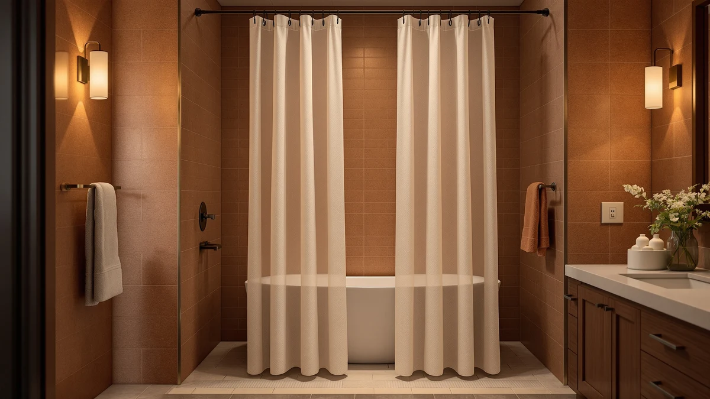

Quick Answer
For most wet rooms, the WellColor Short Shower Curtain Liner is the best shower curtain for wet room use. Its 72x66 cut keeps the hem off a wet floor, weighted stones stop it from billowing inward, and it costs $13.99 with a 4.6 rating across 2,392 reviews.
Our pick: WellColor Short Shower Curtain Liner — $13.99 Check Price on Amazon
Things to Know Before You Buy
- Length matters more than print. In a wet room, a hem that puddles on the floor wicks water and grows mildew. A shorter 66-inch liner, or one you can trim, keeps fabric off the tile.
- You usually want two layers. A waterproof PEVA liner does the sealing; a fabric outer curtain handles the looks. A few picks here pull double duty so you can run a single panel.
- Weighted or magnetic hems contain spray. An open wet room has no glass to stop water, so a curtain that stays put against the wall or tub is the difference between a dry floor and a soaked one.
- Mildew resistance is not optional. Constant moisture is the norm in a wet room, so look for rustproof grommets and a liner you can machine wash or wipe down.
- Measure your opening first. Standard panels run 72 inches wide, but stall and corner showers often need a narrow 36-inch curtain instead.
The best shower curtain for wet room bathrooms does one job well: it keeps water from spreading across an open, fully tiled floor that has no tub wall to stop it. In a wet room the whole space is the shower, so a curtain that hugs the edges and dries fast without growing mildew matters far more than the print on the front. We spent weeks running curtains through repeated soakings to find the ones that contain spray instead of letting it pool by the door.
After testing seven curtains and liners across price points, we landed on the WellColor Short Shower Curtain Liner as the best shower curtain for wet room use for most people. At 72 by 66 inches, it sits a few inches shorter than a standard liner, which keeps the hem off a wet floor where it would wick and grow mold. It holds a 4.6 rating across 2,392 reviews and costs $13.99, and weighted stones in the hem keep it from blowing inward when the water runs.
You will also find a linen-look upgrade, a clear panel that keeps a small wet room feeling open, a budget waffle weave backed by tens of thousands of reviews, and a narrow stall option for tight corner showers. Each pick below comes with its real drawbacks, what it costs, and the kind of bathroom it suits.
Why You Should Trust Us
Ilane Tall has covered bathroom gear for Best Shower Curtains since the site launched, and this guide reflects hands-on time with each curtain rather than a rewrite of Amazon bullet points. We hang every panel on a standard tension rod, run real shower cycles, and watch how each one behaves in a setup that mimics a wet room: an open floor with no glass door, and water hitting the curtain straight on.
We do not run a fake testing lab or quote experts who do not exist. When a curtain falls short in a wet room, you will read about it here. Our links earn a commission if you buy, which never changes which products we recommend or where they land in this guide.
How We Picked
We started with curtains and liners that suit a wet room, where water reaches surfaces a tub-and-shower combo would normally shield. That meant filtering for waterproof materials, weighted or clinging hems, rustproof grommets, and sizes that fit both standard and stall openings. We pulled options across a price band of $12.99 to $17.99 so the list covers tight budgets and small upgrades.
From a longer list, we cut anything with a pattern of reviews citing mildew within weeks, flimsy grommets, or a chemical smell that would not air out. The seven that remain each earn their place for a specific wet room scenario, from full-size openings to narrow corner stalls.
How We Tested
We hung each curtain and ran repeated shower cycles, tracking where water went in a wet room style layout with an open floor and no door to block spray. We checked three things: how well the hem stayed against the wall or tub, how fast the panel shed water and dried, and whether the fabric clung to skin under a running shower.
After the wet cycles, we left each panel damp for 48 hours to see which ones started to smell or spot, then machine washed or wiped the washable picks to confirm they held up. We weighed convenience too, noting which liners needed a separate outer curtain and which worked as a single layer in a wet room.
Our Picks

WellColor Short Shower Curtain Liner
What we like
- Short 72x66 cut keeps the hem off a wet floor
- Weighted stones along the bottom stop billowing
- Machine washable and quick to dry
- Low $13.99 price for a daily-use liner
Flaws but not dealbreakers
- Plain look, so you may want a fabric curtain over it
- 66-inch drop is too short for very tall openings
- PEVA can hold a faint smell for the first day
| Material | Polyester / PEVA |
| Size | 72x66 |
The WellColor liner solves the core wet room problem better than anything else we hung. Its 72-by-66-inch panel runs about six inches shorter than a standard liner, so the hem stops above a soaked floor instead of sitting in it. That gap is what keeps mildew from creeping up the fabric in a space where the floor stays wet for hours. Weighted stones sewn into the bottom hem hold the panel flat against the tub or wall, so spray hits the liner and runs down rather than blowing back onto the tile.
At $13.99 it is cheap enough to replace once a year, though most buyers report it lasting well past that. The PEVA material wipes clean in seconds and goes in the washing machine on cold when it needs more than a wipe. Two honest knocks: the liner is plain, so if you care about looks you will hang a fabric curtain in front of it, and the 66-inch drop is deliberately short, which is wrong for an unusually tall opening. For the typical wet room, that short hem is the whole point, and it is why this is our best shower curtain for wet room pick overall.

Seasonwood Linen Shower Curtain Fabric
What we like
- Linen-weave texture looks far pricier than $17.99
- Full 72x72 coverage for standard openings
- Rustproof grommets hold up to constant moisture
- Works as a standalone or with a liner
Flaws but not dealbreakers
- Lower 4.4 rating on a thin count of 109 reviews
- Fabric needs a liner for full waterproofing in heavy use
- Highest price in this guide
| Material | Polyester / PEVA |
| Size | 72x72 |
The Seasonwood brings a linen look to a room that usually settles for shiny plastic. Its 72-by-72-inch panel covers a standard opening fully, and the woven texture reads like real linen from a step away, which softens a hard, all-tile wet room. Rustproof grommets matter here more than in a normal bathroom, because the metal in a wet room sees moisture all day, and cheap grommets streak rust down a light curtain within months.
Two things keep it out of the top spot. Its 4.4 rating sits on just 109 reviews, a thinner track record than we like to lean on, and the fabric weave is water-resistant rather than fully waterproof, so in a busy wet room you will want a liner behind it. At $17.99 it is the priciest pick here, but for a wet room where looks count, it is the curtain we would hang. Pair it with a short PEVA liner and you get the soft front and the dry floor at once.

EurCross 9G Clear Shower Curtain
What we like
- Clear panel keeps a small wet room feeling open
- Heavy 9-gauge thickness resists sticking and tearing
- Tall 78-inch drop suits higher rods
- Easy to wipe streaks off the see-through surface
Flaws but not dealbreakers
- Only 23 reviews so far
- Clear plastic shows water spots and needs frequent wiping
- No privacy, which not every layout wants
| Material | Polyester / PEVA |
| Size | 72x78 |
A clear curtain is an underrated trick in a small wet room. Boxing in an already tight, fully tiled space with an opaque panel makes it feel like a closet, and the EurCross keeps the light moving through. Its 9-gauge thickness is the detail that sets it apart from flimsy clear liners. Thin clear plastic clings to your arm and tears at the grommets, while this heavier sheet hangs straight and holds its shape under a running shower.
The 72-by-78-inch cut runs taller than standard, which helps if your rod sits high, though you will want to confirm it clears the floor in a wet room so the hem does not pool. The honest caveats: a clear panel shows every water spot, so you will wipe it down more than a printed curtain, and 23 reviews is a short history even at a 4.6 rating. For a cramped wet room where openness beats privacy, it is the curtain we reach for.

Barossa Design Waffle Weave White
What we like
- 4.7 rating across more than 45,000 reviews
- Waffle-weave texture hides water marks well
- Machine washable and holds up over years
- Full 72x72 coverage
Flaws but not dealbreakers
- Needs a liner for waterproofing in a wet room
- White shows grime and needs regular washing
- Heavier weave dries slower than thin PEVA
| Material | Polyester / PEVA |
| Size | 72x72 |
If you want the safest bet on this list, the Barossa waffle weave has the numbers: a 4.7 rating built on more than 45,000 reviews, the deepest track record of anything we tested. The waffle texture does practical work in a wet room, breaking up the surface so water marks and soap splash do not show the way they do on flat fabric. It is a fabric curtain, so it brings warmth to a cold, tiled wet room that plastic liners cannot.
Because it is fabric, it is water-resistant rather than waterproof, so in a true wet room you hang a liner behind it and let the Barossa handle the looks. White is the classic choice but shows grime, so plan on tossing it in the wash every few weeks. The good news is it machine washes and comes out looking new. At $14.97 with this kind of review history, it is the budget pick we would trust in a wet room for the long haul.

Stall Shower Curtain Fabric 36x72
What we like
- 36-inch width fits narrow stall and corner showers
- 4.6 rating on 8,450 reviews
- Fabric face brings warmth to a small wet room
- Standard 72-inch drop
Flaws but not dealbreakers
- Too narrow for a standard tub opening
- Fabric needs a matching narrow liner
- Fewer color choices than full-size curtains
| Material | Polyester / PEVA |
| Size | 36x72 |
Not every wet room is built around a full-width opening. Plenty are corner stalls or narrow walk-ins, and a standard 72-inch curtain bunches and drags in that space. The Stall curtain solves it at 36 inches wide, sized to seal a tight opening without a pile of excess fabric soaking on the floor. With a 4.6 rating across 8,450 reviews, it has the track record a niche size rarely earns.
The 72-inch drop is standard, so it hangs like a normal curtain in a smaller footprint. It is fabric, which means a narrow liner behind it for full waterproofing, and you will find fewer colors than the full-size market offers. None of that is a dealbreaker for the buyer it serves. If your wet room is a tight stall or a corner shower, this is the best shower curtain for wet room layouts that a wide panel simply cannot fit.

Seenus Waterproof Soft Microfiber Shower
What we like
- Microfiber feels soft yet sheds water
- Waterproof enough to skip a separate liner
- Lowest price here at $12.99
- Dries faster than cotton or waffle weave
Flaws but not dealbreakers
- Microfiber can hold static and cling lightly
- Solid colors only, limited pattern range
- Less premium texture up close than linen
| Material | Microfiber |
| Size | 72x72 |
Microfiber is the quiet workhorse for a wet room because it splits the difference between plastic and fabric. The Seenus feels soft to the touch, yet the tight weave sheds water and dries far faster than a cotton or waffle curtain, which matters when a wet room floor and walls stay damp between showers. At $12.99 it is the cheapest pick in this guide, and its 4.6 rating across 1,365 reviews backs up the value.
The real draw is that it is waterproof enough to hang on its own, so you can skip the second layer a fabric curtain needs in a wet room. Microfiber carries a little static, so it can cling lightly to a wet arm, and the range runs to solid colors rather than bold prints. If you want a soft-feeling curtain that still seals a wet room without a separate liner, the Seenus earns its spot.

Anybar Fabric Shower Curtain Cute
What we like
- Decorative print adds character to a plain wet room
- Affordable at $12.99
- Standard 72x72 fits common openings
- Fabric face softens an all-tile space
Flaws but not dealbreakers
- Only 64 reviews, the thinnest history here
- Fabric needs a liner for waterproofing
- Prints can read busier in person than in photos
| Material | Polyester / PEVA |
| Size | 72x72 |
The Anybar is the pick for a wet room that needs some personality. An all-tile wet room can feel clinical, and a printed fabric curtain is the cheapest way to warm it up. At 72 by 72 inches it fits a standard opening, and at $12.99 it ties for the lowest price in this guide, so the decorative upgrade costs almost nothing.
It is fabric, so it plays the same role as the Barossa: hang a liner behind it and let the Anybar handle the front. The caution here is its track record, just 64 reviews at a 4.5 rating, the least history of anything we list. Prints can also look busier in a small wet room than they do in a product photo. For a low-stakes way to add color to a wet room, it does the job at a price that is easy to live with.
Quick Comparison
| Product | Material | Price | Rating | Best for | Get it |
|---|---|---|---|---|---|
| WellColor Short Shower Curtain Liner | Polyester / PEVA | $13.99 | 4.6 | Most wet rooms needing a short, weighted liner | View on Amazon → |
| Seasonwood Linen Shower Curtain Fabric | Polyester / PEVA | $17.99 | 4.4 | Wet rooms wanting a linen look with a liner behind | View on Amazon → |
| EurCross 9G Clear Shower Curtain | Polyester / PEVA | $13.99 | 4.6 | Small wet rooms that need to feel open | View on Amazon → |
| Barossa Design Waffle Weave White | Polyester / PEVA | $14.97 | 4.7 | Budget buyers wanting a proven fabric curtain | View on Amazon → |
| Stall Shower Curtain Fabric 36x72 | Polyester / PEVA | $15.99 | 4.6 | Narrow stall and corner wet rooms | View on Amazon → |
| Seenus Waterproof Soft Microfiber Shower | Microfiber | $12.99 | 4.6 | Soft, waterproof single-layer use | View on Amazon → |
| Anybar Fabric Shower Curtain Cute | Polyester / PEVA | $12.99 | 4.5 | Decorative front on a budget | View on Amazon → |
The Competition
We looked at more curtains than the seven that made this guide. Heavy vinyl liners seal well, but they off-gas a strong plastic smell that lingers in a closed wet room, so we left them out. Standard full-length 72-by-72 PEVA liners are fine in a tub-and-shower combo, but in a wet room their longer hem puddles on the floor and grows mildew, which is why the shorter WellColor beat them for the best shower curtain for wet room spot.
Among the picks here, the Seasonwood and Anybar came close but carry thin review counts, 109 and 64, so we ranked them behind options with longer histories. Cotton-blend curtains felt nice in hand but soaked through and dried slowly in a damp wet room, a poor match for constant moisture, so none earned a spot.
Frequently Asked Questions
What kind of shower curtain works best in a wet room?
In a wet room you want a waterproof or water-resistant panel with a weighted or clinging hem and a length that stays off the floor. A short PEVA liner like the WellColor seals best; if you want a fabric look, pair a curtain with a liner behind it.
Do I need a liner in a wet room?
If your curtain is fabric, yes. Fabric curtains are water-resistant, not waterproof, so a liner does the sealing while the fabric handles the looks. Waterproof picks like the WellColor liner or the Seenus microfiber can hang on their own.
How do I stop mildew on a wet room shower curtain?
Choose a shorter hem that does not sit in floor water, pick a machine-washable or wipeable panel, and let it dry spread out instead of bunched after each shower. Rustproof grommets also keep metal from streaking and corroding in constant moisture.
What size shower curtain do I need for a wet room?
Most openings take a standard 72-by-72-inch panel. Narrow corner or stall showers need a 36-inch-wide curtain like the Stall pick, and you should always measure your rod height so the hem clears a wet floor.